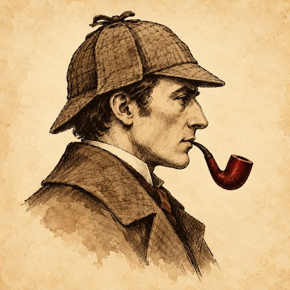
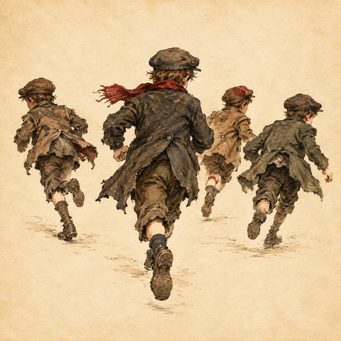

Catch Murderer with Jev Swarm — A Detective Game Case Study
Jev is good at making fast decisions. But can a swarm of Jev agents gather clues and name a murderer? We put three detectives into a Sherlock Holmes game based on Arthur Conan Doyle's A Study in Scarlet and The Sign of Four: a swarm of Jev agents on its own, a large reasoning model (GPT6-Astra) on its own, and GPT6-Astra leading a Jev swarm.

Holmesthe one who reasons and decides:
The Irregularsthe many who search:Two roles, and we let different models and algorithms play each one. Choose a case set and one player for each role.
The question. Holmes never worked alone. His street boys, the Baker Street Irregulars, could "go everywhere, see everything." AI faces the same choice today: should a task go to one large reasoning model, or to a swarm of small, fast agents? We tested both, and the two working together, in a detective game we call The Irregulars.
Preliminaries. Each case takes place in a simulated Victorian London with 100 addresses and 10 suspects. Every address holds one lead, which may be a witness, a footprint, a red herring or a lie. A case counts as solved only if the detective names the right culprit, motive and hideout within 12 hours of case time. Three detectives play every case:
- Holmes (GPT6-Astra) + Jev Swarm: GPT6-Astra stays at 221B Baker Street and plans the investigation, while 12 Jev boys run the errands and report back to him.
- The Lone Genius (GPT6-Astra): a single large reasoning model travels from door to door by cab and does all the searching and reasoning itself.
- Jev Swarm: 100 Jev boys with no leader. They share clues with the boys around them and vote on the answer.
The baselines. We also test hand-written baselines: a rule-based searcher that divides up the addresses, and a clue counter that picks the answer repeated most often. They can play every role (alone, as Holmes, or as a leaderless swarm), they cost nothing, and they run in under a tenth of a second per case.
The finding. The Jev swarm supplies evidence coverage, while the leader reasons. How much of the leader's reasoning a case needs depends on how hard its evidence is to interpret:
- When the evidence is honest, evidence coverage is the bottleneck, and a simple rule at the centre is enough to reach the right answer.
- When the evidence conflicts, you need both. Neither the swarm nor the reasoner is enough on its own, and a rule-based heuristic fails completely.
The data. Every run is fully logged, and readers can replay any case on the results page.
1. Case Study: The Soho Physician
The case. Dr Florence Fenwick has been found dead in Soho. Heavy bootprints mark the scene, and the knife was sold to a right-handed buyer. There are ten suspects, a hundred doors to knock on, and twelve hours on the clock. Somewhere in the city lies the truth: Beatrice Jessop killed the doctor out of revenge for an old wrong, and she is now hiding in an opium den in Kensington.

The Jev Swarm is fast but reaches agreement too early. One boy commits to an answer, the boys near him copy it, and the vote snowballs until the case closes. The swarm gets the motive and the hideout right, but it names the wrong culprit: a woman who simply wore the right kind of boots.
Holmes and the Jev Swarm solve it by checking before concluding. Holmes first sends the boys to the scene and to the witnesses, asking them for "exact observations, not rumours." When one suspect's alibi looks doubtful, he sends boys back to check it again instead of guessing. He makes his accusation only once the bootprints, the knife and the motive all point to the same person.
The Lone Genius reasons well but runs out of doors. Early in the case it narrows the culprit down to five suspects. However, the one clue that separates them is at an address it never reaches, so in the end it has to guess.
Where the decisions happen. Figure 1 replays all three detectives side by side. Holmes makes a small number of deliberate plans, while his boys make many small decisions about where to go next. The Lone Genius has to spend an expensive decision by the large model on every single stop. The swarm makes thousands of decisions, but none of them takes all of the evidence into account.
The lesson of one case. The genius can weigh evidence, but it cannot gather enough of it. The swarm gathers evidence from everywhere, but it cannot weigh what it finds. The leader with a swarm gets both.
2. Standard Cases: The Leader with a Swarm Wins, and a Simple Centre Is Enough

The Lone Genius falls short on coverage. One cab can visit only so many doors, and the deciding clue is often behind a door it never reaches (section 4).
The Jev Swarm falls short on judgment. It is by far the fastest detective, but most of the answers it agrees on are wrong: a few boys misread a clue, the boys around them copy the confident vote, and the error spreads before anyone checks it. Jev also cannot hold a whole case in mind. As a lone detective it solves only 25 of 100, and a leaderless swarm of 12 boys, the size of Holmes's team, solved none of the cases we ran, while the same 12 boys under Holmes solved almost all of them. That is why, in the winning team, Jev only makes small local decisions, such as where to look next and what to report, while the reasoning model keeps track of the case.
On honest evidence, a simple rule is best. Every true fact appears at two addresses and every lie at only one, so counting the clues finds the truth. A rule-based Holmes leading rule-based boys solves 97 of 100, at no cost and in under a tenth of a second per case. If the evidence can be taken at face value, use rules.
Finding 1. When the analysis is simple, the architecture does most of the work: the swarm covers the evidence in parallel, and a simple rule combines what it finds.
Why not code a smart rule-based solver? Because a counting rule only works while the evidence is honest. The models were told, and the rules are built on, the same rule of thumb: witnesses sometimes lie, so trust facts that turn up at more than one address. When somebody lies on purpose, as in the frame-up cases below, that rule points the wrong way, because the lie becomes the fact that repeats. A rule-based solver could be written to catch bribery, but only by someone who already knows that bribery is the trick, and every new kind of deception would need new code. Deciding which testimony to trust, without being told how the lie works, is the judgment we want from the reasoner.
3. Frame-Up Cases: When Somebody Lies, You Need Both
The setup. In these cases the murderer bribes servants to describe an innocent man, and plants a clue to support their story. The lie is now repeated more often than the truth, and only two honest witnesses saw the bribe being paid.

Counting collapses, because the majority is lying. GPT6-Astra, by contrast, asks who is giving the evidence and why. In one frame-up, Holmes wrote: "Pargeter's servants supply both his alibi and evidence against Leopold; the dry snuff-box suggests planting."
The other two detectives fall short for the same reasons as before. The Lone Genius can see through the lies, but it still misses evidence at addresses it never reaches. The Jev Swarm does better than every detective that only counts, because some of its boys doubt the testimony. Without anyone to weigh those doubts, however, it often settles on the framed man.
Finding 2. When the analysis is hard, evidence coverage and judgment are both necessary, and neither is enough on its own.
4. Why the Lone Genius Loses: Efficiency, Not Capability
Holmes (GPT6-Astra) + Jev Swarm solves the most cases within the 12-hour limit, and it finishes with time to spare.
The genius is capable. When we give it twice as much time and twice as many visits, it nearly catches up (Table 3). What helps is the extra visits, not the extra hours.

However, it is less efficient. Even with double the budget, the Lone Genius solves fewer cases, takes longer in both case time and real time, and goes past the 12-hour limit, all at about the same cost:
| Standard cases | Solved | Case time (median) | Real time (median) | Cost per case |
|---|---|---|---|---|
| Holmes (GPT6-Astra) + Jev Swarm, 12 h | 96 | 11.0 h | 97 s | $0.58 |
| The Lone Genius (GPT6-Astra), 24 h / 40 visits | 91 | 14.8 h | 126 s | $0.60 |
Why this happens. A single reasoner has to do all of the legwork itself, one step after another. A cheap, fast swarm covers the city in parallel, and a strong leader turns what the swarm finds into the right verdict.
What This Suggests
A detective case is a divide-and-conquer problem. The investigation splits naturally into many small, local subproblems: where to look next, and what a particular witness or footprint means. Each of these can be solved quickly and in parallel. The answers then have to be combined into a single verdict, and that combining step is where the hard reasoning lives. Fast agents are well suited to the divide step, and a strong reasoner is needed for the conquer step whenever the pieces disagree.
The design rule. Divide the labour according to how hard the combining step is:
- Always use the swarm for evidence coverage. Small, fast agents can make the many local decisions about where to look next, all in parallel.
- For simple analysis, a simple centre will do. If the evidence can be taken at face value, divide up the work and combine the results with a simple rule.
- For hard analysis, put a reasoner at the centre. When sources conflict or try to deceive, both voting and counting follow the majority, so a strong reasoner has to make the final judgment.
Games are the right test bed for this question. At LMGame, we have found that reasoning puzzles of this kind are everywhere in games, and that many of them can be solved by divide and conquer: explore widely, solve the small pieces locally, and reason carefully when the pieces are put back together. Games also run on a clock and keep score, so they let us measure both how often an approach succeeds and how much time and money it costs. That makes games an ideal place to study the trade-off between capability and efficiency when fast-decision models like Jev are deployed on real-time challenges.
The answer. Should we choose one genius or many minds? The best choice is one genius leading many minds.
Methods in brief. Each case is generated from a random seed. It has 100 addresses on a street graph, 10 suspects with six visible traits, 6 possible motives and 8 candidate hideouts. In standard cases, each true key fact appears at two addresses and each lie at one. Frame-up cases add coordinated lies, a planted clue, timed alibis and witnesses to the bribe, and every case is checked to make sure a careful reader can solve it. All detectives get 12 hours of case time. Holmes's boys travel on foot, and the Lone Genius travels by cab, with a limit of 20 visits. The Jev Swarm uses a communication range of 2 km and closes a case when 30 boys cast identical votes. The smaller-swarm check used 12 boys with a 4-vote quorum on 29 standard cases. Each model call was allowed 30 seconds, and no decision fell back to a scripted rule. The tables report 95% Wilson confidence intervals.
More Jev Games
The detective game is one of several. The same question runs through every game in the repository: what can a swarm of fast Jev agents do on its own, and what does it need to succeed in each environment? Each one runs from the same launcher, with presets you can change.
- Circuit: a hardware bug hides in a small pipelined CPU. One debugger, Holmes directing a dozen street boys, or 100 Irregulars with no leader race to name the broken block and the fix.
- Fish schooling: every fish picks its next move with Jev from its own local view while a predator attacks. There is no central planner and no messages between fish.
- Honeybee nest-site selection: scouts inspect possible homes and waggle-dance for the ones they like, until a quorum forms and the swarm lifts off. You can watch noisy individual judgments become one collective choice, and then break that process on purpose.
- The Irregulars: the detective game from this post, with every case, preset and replay.
Watch the trailer · Results, and a replay of every case (try case 57): every move, clue and vote →